Software Engineering
SCC. 150: Digital Systems
FUN: Digital Systems Introduction
Computer
- Automatic electronic apparatus for making calculations or controlling operations that are expressible in numerical or logical terms, and ability to run arbitrary programs stored in memory.
- An ‘adding machine’ would not be classed as a computer as it only carries out one specialised function, therefore is not programmable.
- Doesn’t have to be electronic.
Name | Year | Description |
Antikythera mechanism | 150-100 BC | Clockwork mechanism used by Ancient Greeks, examined astronomical positions and eclipses. |
Analytical Engine | 1837 | Punched card based computer developed by Charles Babbage in the UK, worked with Ada Lovelace. |
Z1, Z2, Z3 Electromechanical Computer | 1935-1941 | Developed in Germany by Konrad Zuse, first working programmable digital computer (Z3). |
ENIAC | 1946 | Made in USA by U. Penn & US Army, first to be electronic and general, programmable to solve maths problems. |
Manchester SSEM | 1948 | First ‘stored program’, was used a small experimental machine, found in Manchester’s museum. |
Cambridge EDSAC | 1949 | Sold as first commercial computer from 1951. |
FUN: Computer Architecture
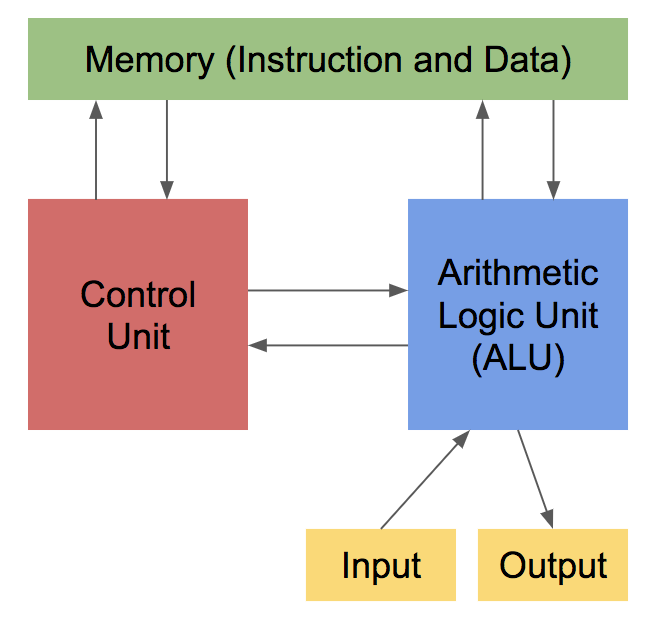
Architecture Overview
- Science of construction of any kind for human use.
- Computer architecture e.g. hardware
- System architecture e.g. linking computers with network
- Software architecture e.g. OS, WWW, MS Office
- Most popular is Von Neumann Architecture → → →

Harvard Architecture
- Alternative architecture to the Von Neumann.
- This simply means that the instruction memory and data memory are separate components.
Central Processing Unit (CPU)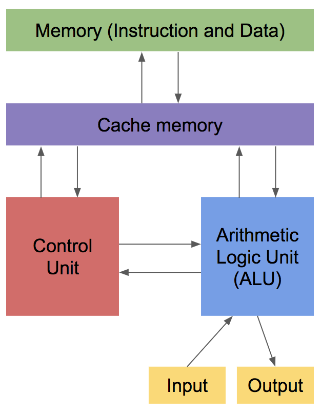
- Control unit plays the role of the central executive allocating resources and tasks to its slave components.
- The ALU & Control Unit often have cache memory, this speeds up the process of some tasks by changing the location of the tasks. Using cache memory technology for standard RAM would be expensive as it comes from rare resources.
Evolution of computer architecture |
50s-70s | - Diverse hardware (mostly Von Neumann)
- Supercomputers / Mainframes / Minicomputers
- Different system software - apps had to be re-written for each
|
80s | - More companies used computers, e.g. Bill Gates, Microsoft
|
80s-90s | - IBM Personal (Micro) Computer, 1981, open (non-proprietary) architecture, evolving parallel with Intel x86 microprocessor family. Gained market dominance, caused death of mini-computer market. Led to era of PC adoption and range of OS.
|
00s-10s | - Computers are seen everywhere (Internet of things), people use watches, phones, laptops.
|
Modern architecture
- Modified to increase speed of processing.
- Popular measures of speed are; clock rate e.g. 1.87GHz CPU makes 1.87 billion ticks/s (different type of instructions may take different number of ticks).
- Millions of instructions per second (MIPS) the higher the better, but different instructions take different numbers of ticks.
- Floating point operations per second (FLOPS) measure of computer speed e.g. fastest computer in 2013 reached 33.863 petaFLOPS.
Limiting factors on speed
- Density limitations - Number of transistors per square inch. Moore’s Law (1965 and 1975) predicts number of transistors on silicon will double every two years.
- Power limitations - ⅓ of CPU power used to propagate clock signal around CPU. Power and heat problems increase as clock rate increases.
Parallel architectures
- Demand is increasing for faster computation power, we overcome this by adding multiple cores to a single CPU. This increases efficiency, but complicates system software.
- Allows Coarser-grained parallelism: clustering - linking computer using high-speed networks (blade servers) e.g. Google or Facebook servers, often in cold places to be more heat efficient.
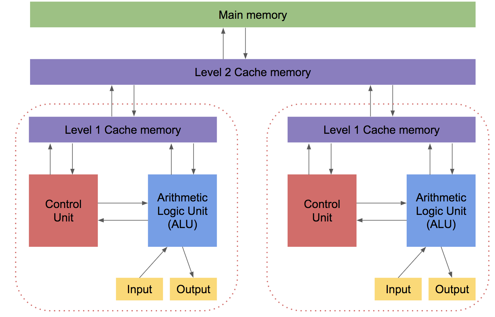
FUN: Information Coding
Simplicity
- Due to cost, performance and scalability, we need to make computer hardware as simple as possible, thus, hardware handles small, positive whole numbers.
- Any data on computer is just a representation that maps to small, positive, numbers e.g. a code for characters could be A=1, B=2, C=3...
Code |
American Standard Code for Information Interchange (ASCII) | Defines 128 (symbols - letters A-Z represented as 65-90 (preservers order, easy to sort). |
Latin-1 | Extends ASCII from 128 to 256 (0-255) values supporting most european languages. |
Unicode | Further extension of Latin-1 from 256 to 65536 (0-65535) values. |
Negative binary numbers
- Sign and magnitude → Leading bit is signed ‘1’ to represent negative number e.g. 1101 = -5
- Excess-n → Add negative number to ‘n’ then convert to binary 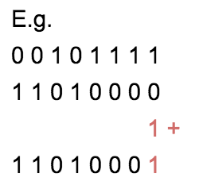
e.g. -21 + 127 = 106
- One’s Complement → Flip every bit to represent negative numbers.
- Two’s Complement → Flip every bit and then add 1 to the result.
Binary fractions

IEEE 754 floating-point standard

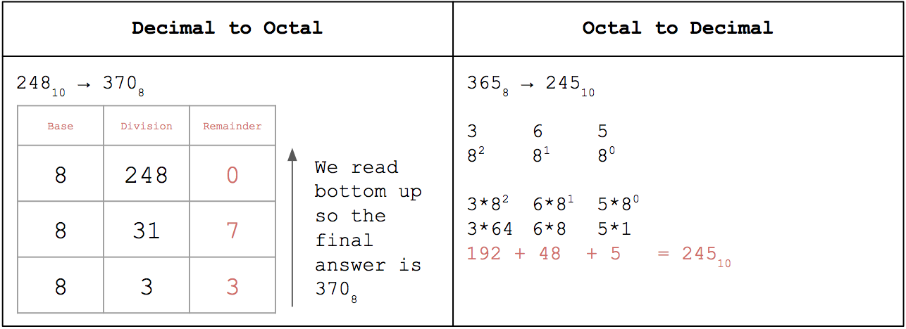
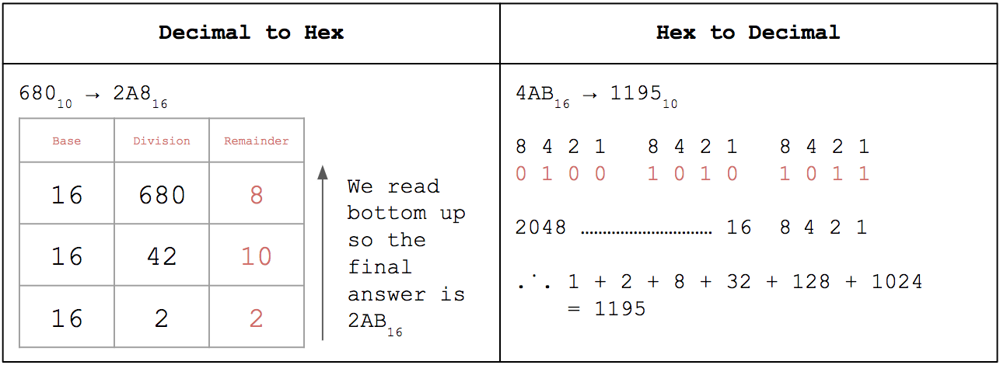
FUN: Boolean Logic
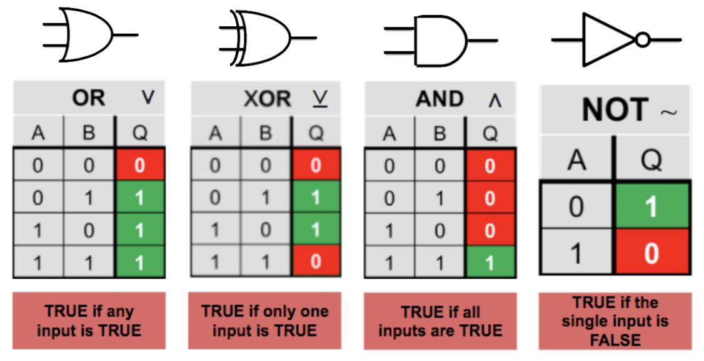
Overview
- Sentence that is either true or false i.e. Boolean 1 or 0.
- We can represent this in truth tables which show all possible logic combinations.
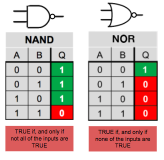
Inverted logical operations
- NAND & NOR commonly used instead of normal gates.
- Reason: Universal, any binary logic circuit can be built entirely from NAND or NOR gates.
- Using only NANDs (or NORs) is cost-effective as you only need one component.
Karnaugh maps
- Grid in which each square represents one possible combination of inputs.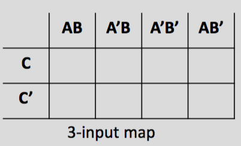
- Columns and rows are ordered so that only one input ‘changes’ from col-to-col and from ‘row-to-row’
- They can also wrap from ‘left-to-right’ and ‘top-to-bottom’
Using a KM
- Pick an appropriate template with enough inputs.
- Write down all occurrences.
- Keep only the ones that repeat in given groups.
- Ensure to have the smallest amount of groups possible.
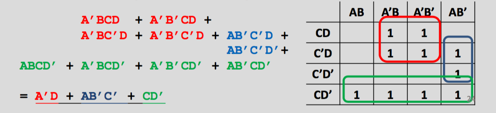
Perfect Induction
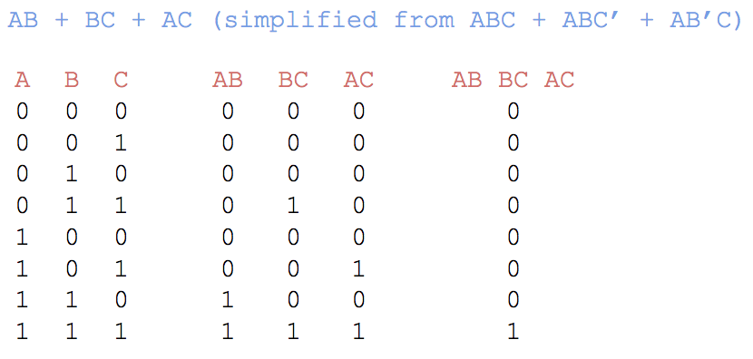
Design of logic circuits
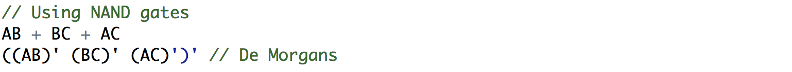
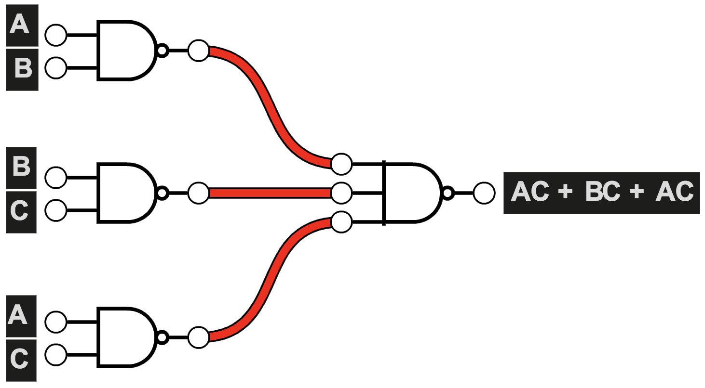
FUN: Instruction Set Architecture (ISA)
Overview
- View of processor that is seen by programs being executed by that processor)
- Provides commands to the processor, telling it what to do. Making it essentially machine language, commands include:
- ADD: Add two numbers together
- COMPARE: Compare numbers
- IN: Input information from device e.g. keyboard
- JUMP: Jump to designated RAM address
- JUMP IF: Conditional statement that jumps to designated RAM address.
- LOAD: Load information from RAM to CPU.
- OUT: Output information to device e.g. monitor
- STORE: Store information to RAM
Accumulator-based ISAs | Most instructions operate on two operands - register and memory location. |
General purpose registers ISAs | Multiple registers, most instructions can access registers and memory locations in various combinations. |
Reduced Instruction Set Computers (RISC) | Small number of instructions with common operand format. All instructions apart from LOAD and STORE operate on registers. Typically, instructions take only 1 clock cycle to execute. |
Stack-based ISAs | Instructions can only access operands at top of stack - PUSH and POP instructions used to manipulate stack. |
MIPS 1 ISA - categorised as RISC
- MIPS32 ($0-$31 registers, each with 32-bits) has no floating point capability.
- Includes: Arithmetic and logic instructions, Data transfer instructions and Control transfer instructions
- addu: unsigned addition, ignore any overflow
- add: 2’s complement addition; on overflow, execute a trap
- addi: (also used to copy one register to another)
- and:
- andi:
- or:
- sll: shift left logical - shifts to the left by C bits and puts result in
MIPS control-transfer instructions: Instructions execute sequentially by default - as laid out in memory. | MIPS data-transfer instructions: Enable data to be transferred in both directions between registers and main memory. |
beq: if ($s == $t) jump to instruction at PC+4+(4*C) | lw: load the 32-bit unit (word: 4 bytes .˙. 32 bits) starts at MEM[$s+C] into $t |
bne: if ($s != $t) jump to instruction at PC+4+(4*C) | sw: store word in $t into MEM[$s+C] and the 3 following bytes |
j C: jump (unconditionally) to instruction at specified address |
|
jr: jump (unconditionally) to address contained in register $s |
|
jal C: call a subroutine |
|
Instruction encoding (example)
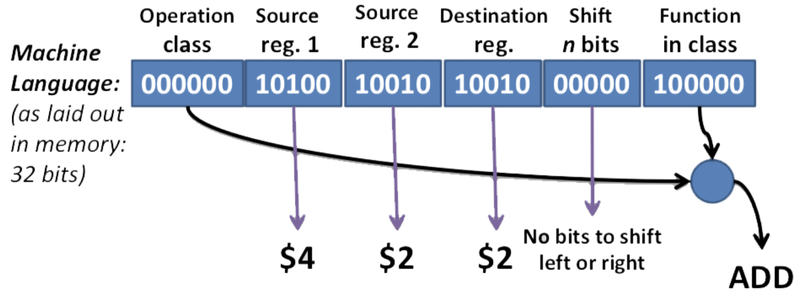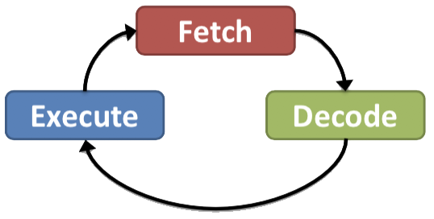
Registers
- Holding areas for data being worked on the inside of the CPU, works on registers only, not in main memory (registers are much faster)
- Special registers: Program counter (pointer to next instruction to be executed and stack pointer (overflow).
- General purpose registers: hold results whilst working on calculation.
The Stack
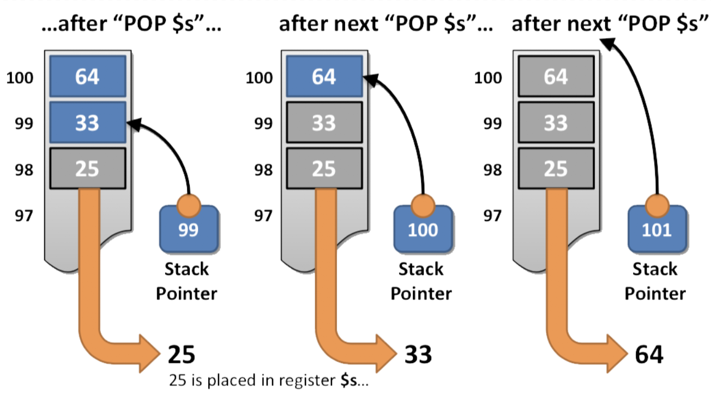
FUN: Arithmetic Logic Unit (ALU)
Overview
- Implements arithmetic and logic operations e.g. add, subtract, multiply, divide, shift, and, or, not, xor as well as comparators.
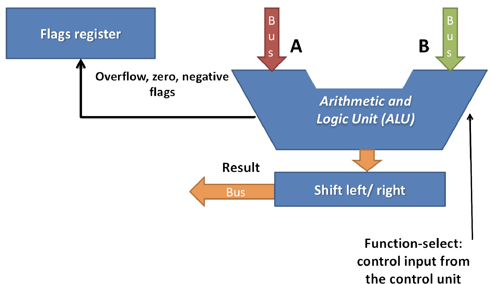
BUS
- Control: Transfers data between components.
- Address: Carries address of memory allocation from CPU to memory.
- Data: Transfers data between components and other computers.
Half adder
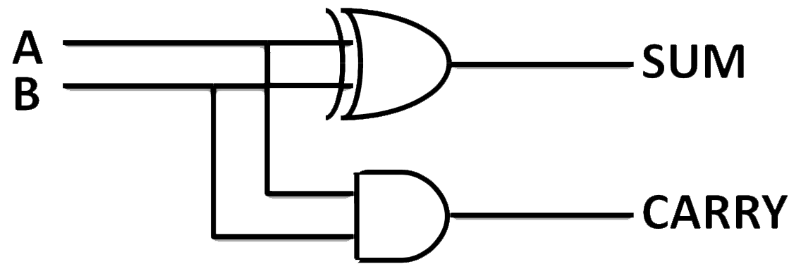
Full adder
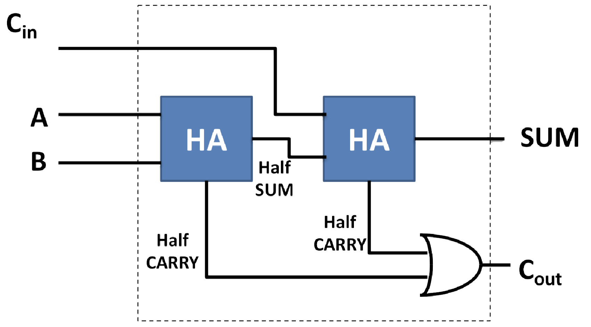
Carry-select adders
- Slow because each stage must wait for carry bit from previous stage.
- We can split the problem by adding the lower bits and upper bits independently.
- Add lower bits as normal.
- For the upper bits use two sets of full adders, one that assumes the result of lower bit is 1, other assumes 0.
- One answer is available, select one or the other.
Status flags
- Each flag reflects aspect of outcome of most recent ALU operation.
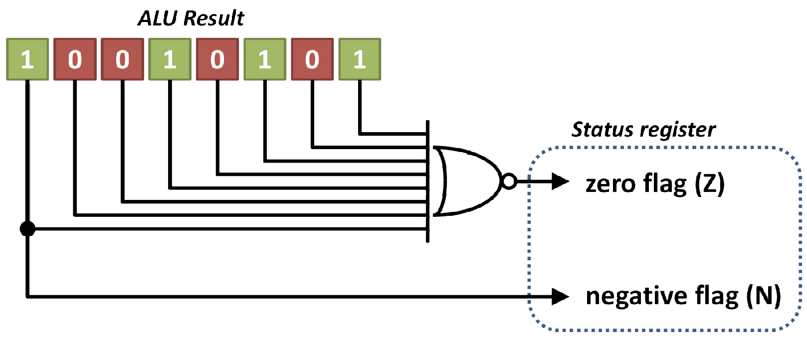
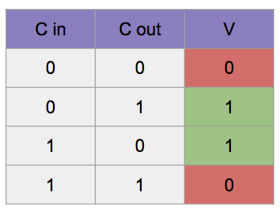
Overflow flag
- If the sign bits are the same, but the result is different sign, we have an arithmetic overflow error.
- The flag allows us to see which operation has an overflow error and allocate an appropriate error correction technique.
Bit shifting
 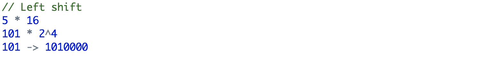
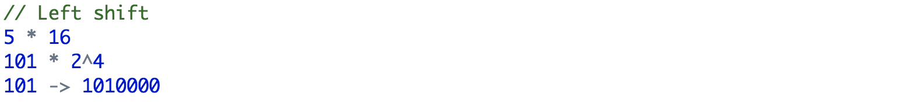
FUN: Memory
Memory
- Main purpose is to store bits, there are two types of volatile memory.
- Dynamic: Variable size, used for main memory → bits stored by charging or discharging device. Read by sensing presence or absence of charge.
- Static: Fixed size, used for registers and caches.
Byte-ordering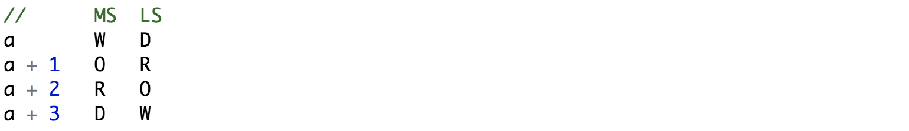
- Big-endian: Location with lowest memory holds the most significant byte (MSbyte).
- Little-endian: Location with lowest memory holds the least significant byte (LSbyte).
Combinational logic and sequential logic
- Combinational logic outputs are purely a function of its inputs
- Sequential logic outputs are purely a function of its inputs and outputs.
- Involves feedback of the outputs and inputs.
- The feedback is the hook on which we hang memory
S-R flip flop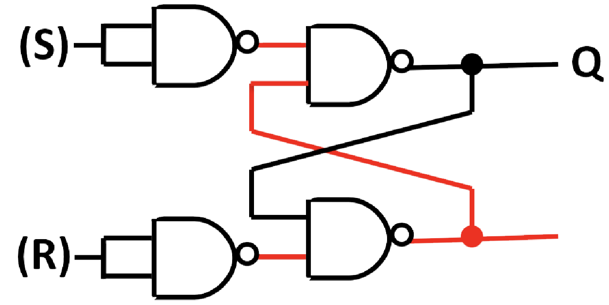
- Remember which of 2 possible states it is in.
- High S pulse → Q = 1 state (set)
- High R pulse → Q = 0 stage (reset)
- Not allowed to have both high.
- When S/R returns to low, Q remains, thus flip-flop remembers state.
Clocked D-type flip flop
- SR flip flop has distinct SET and RESET inputs. It’s better to have a , single input that sets (1) and resets (0).
- Cannot tell flip flop when it should store input data.
- We can use a D-type as a fix as it can latch in a 1 and 0.
- To latch 1 you need two high inputs
- To latch 0 you need at least one low input
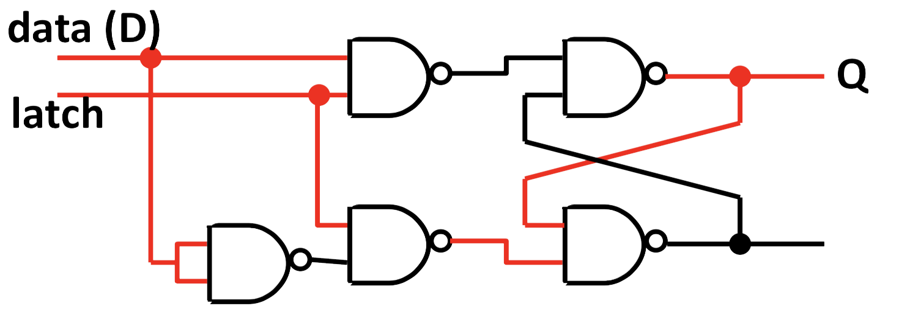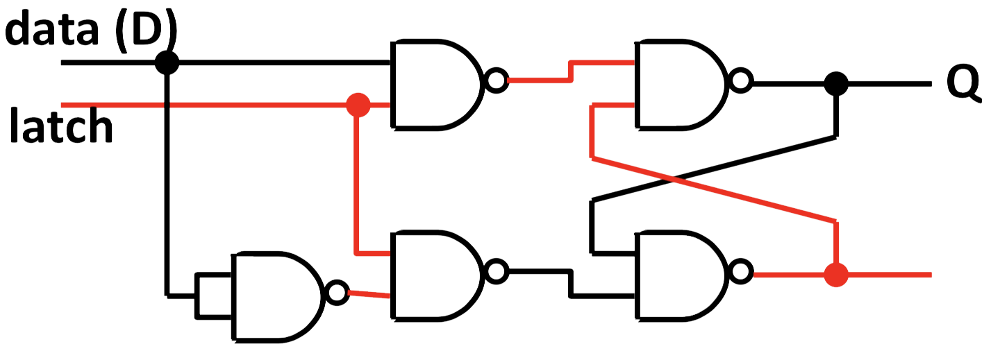
Master slave-flip flop
- We need close control when data leaves and arrives flip flop as otherwise we will overwrite stored bits before reading them.
- Made up of two D-type flip flops.
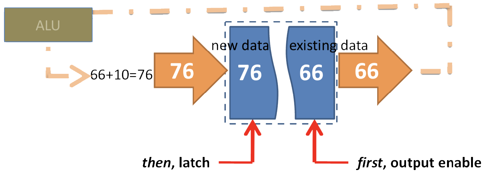
Buses
- Bundles of wires, one for each bit.
- Address: Carries address of memory allocation from CPU to memory.
- Data: Transfers data between components and other computers.
- Bus wires we shared so we must ensure only one active output at a given time.
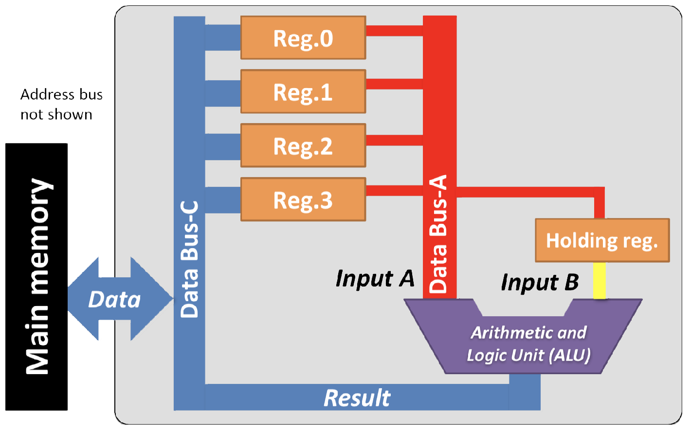
FUN: Control Unit
Overview
- ‘Little program’ running inside the processor endlessly which executes the fetch, decode, execute cycle.
- Controlled by a clock, gives it regula, timed electrical pulses (ticks).
- One instruction may require multiple ticks depending on complexity of tasks.
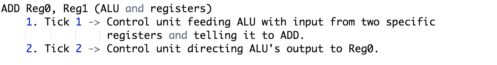
Controlling main memory
- Instruction register (IR) holds instruction currently being executed.
- Memory address (MAR) holds current instruction address.
- Memory data register (MDR) holds current instruction data going to and coming from memory address in the MAR.
Fetch-decode-execute cycle
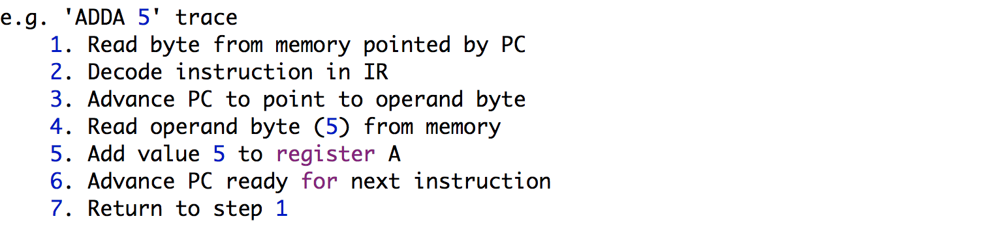
FSM vs microcoded CUs
- Finite state machine (FSM) - hard wired sequential logic, built directly in terms of NANDS. High performance, but expensive and hard to evolve.
- Microcode - sequence of micro-instructions in a micro-memory. Lower performance but very flexible in terms evolving the system.
Pipelining
- Method to exploit inherent parallelism inside CU to speed up FDE cycle.
- Split cycle into n-sub stages e.g. human workers on factory production line.
- Leads to multiple disadvantages (hazards)
- Control hazards: Control-transfer instruction changes flow of execution.
- Data hazards: Instruction ‘n’ depends on result from instruction ‘n-1’.
- Structured hazards: Two parts of pipeline need access to same hardware.
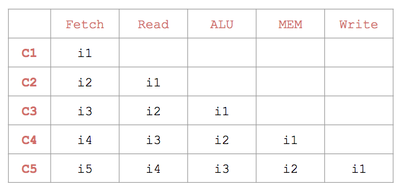
FUN: Input and output system
I/O challenge: Speed-gap
- Devices often mechanical, run orders of magnitude slower than CPU e.g. we can’t slow down CPU to communicate with keyboard.
I/O challenge: Device diversity
- Data access modes e.g. read/write only random access.
- Device specific operations e.g. resolution, time, focus.
- Device drivers group ‘somewhat’ similar devices together e.g. all hard drives are essentially the same.
Two-fold classification (device types)
- Character devices: Send and receive one byte at a time e.g. keyboard.
- Block devices: Send and receive multi-byte block at a time e.g. hard drive.
Disk latency
- Latency more important than raw data transfer speed.
- Seek time → time for head to move input to require cylinder.
- Rotational delay → time for cylinder to ‘come around’.
Traditional two-fold class of processor support
- Isolated I/O → dedicated pins for devices
e.g. Intel x86 Instructions port addresses IN / OUT.
- Memory mapped I / O → within CPU’s linear memory addresses.
Data transfer errors
- Electrical noise (long cables), mechanical stresses.
- Code for error detection and correction.
- Correction: Always expect even no. bits (0s) or expect odd no. bits (1s).
ASS: MIPS Architecture and Instruction Set
MIPS
- Reduced Instruction Set Computing (RISC)
- Simplified instruction set, executed fast and efficiently.
- Complex operations executed using sequence of instructions.
- CISC → complex set of instructions.
- OISC → one instruction set computer
- Difference: CISC has a variable input size and thus takes up less registers, however, it requires more clock cycles to perform its calculation and thus it is more costly in terms of RAM.
Instruction set
- Lowering of compiler to hardware level
- MIPS architecture is a 32-bit system.
- Three basic types of MIPS instructions:
- Register type (R-type)
- Immediate type (I-type)
- Jump type (J-type)
Register type
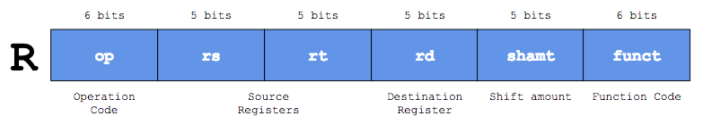
Arranging code
- Many ways to translate high level to assembler language.
- Compilers may arrange code in different ways to achieve optimisations based on their system e.g. to take advantage of their hardware.
- May be the reason why Apple Devices are so efficient as they only have a set number of hardware components so code can be written specifically for those components. Instead of Windows where a variety of components are matched with the same code.
ASS: Registers and Simple Arithmetic
Calculations in Assembly
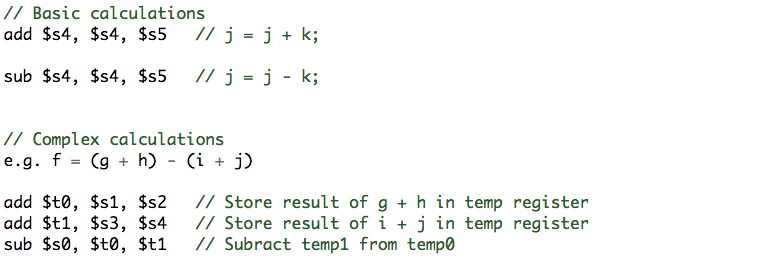
Immediate type
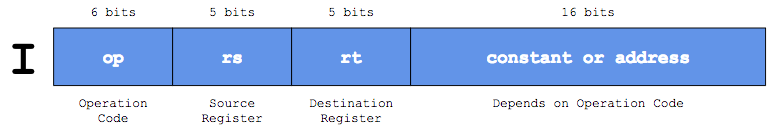
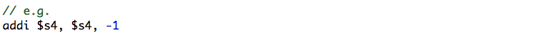
Logical operators
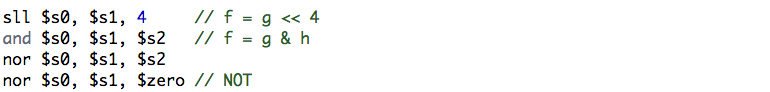
ASS: Accessing Memory and Decisions
Accessing memory
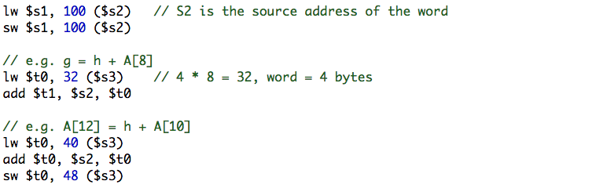
Jump type
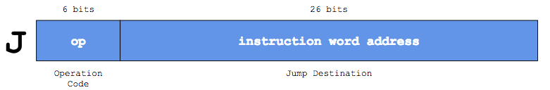
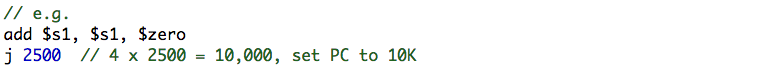
Conditional branch
- Branch on equal: beq
- Branch on not equal: bne
- Set on less than: slt
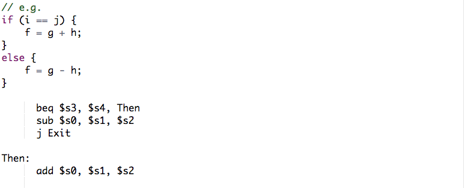
ASS: Procedures
Overview
- Stored subroutine that performs specific task based on parameters it was provided.
- Essentially function calls allowing to reuse bits of code.→ perform complex operations as many times as you want.
Process
- Place parameters in place where procedure can access.
- Transfer control to procedure.
- Acquire storage resources e.g. variables and arrays.
- Perform task.
- Place result where caller has access.
- Return to origin i.e. jr $ra
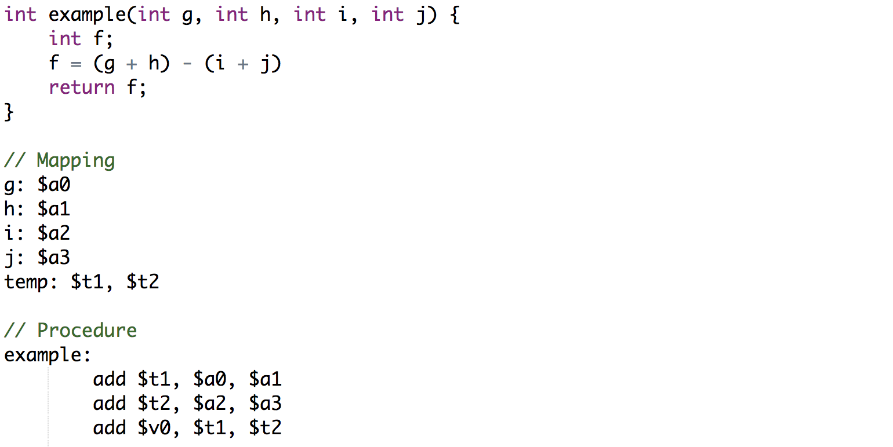
ASS: Syscall
Overview
- Allows user to call upon basic system functions and transfers control to operating system kernel.
- Different processors have different service numbers e.g. MIPS print integer service call is 1 and printing string is 4.
Ending programs
- Create a break point e.g. nop.
- Create an infinite loop at end of program
- Allow operating system to take care of it via a syscall.
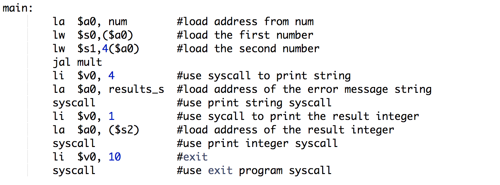
ASS: Self-modifying code
Overview
- Code which alters its own instructions based on previous input or output.
- Used for optimisation and patching.
Advantages | Disadvantages |
- Reduces repetitive conditional branching.
- Improves algorithmic efficiency e.g. modern computers both sides of if statements and then choose.
| - Hard to read and then debug.
- Doesn’t work well with instruction pipelines.
|
Self-mod example

ASS: Exceptions, Interrupt and I/O
Coprocessors
- Extends functionality of MIPS while sharing instruction fetch and execution control logic of CPU.
- CP0 - System Coprocessor: Abstraction of functions necessary to support OS, includes exception handling, memory management, scheduling.
Exception
- Any unexpected change in flow control e.g. dividing by zero.
- Synchronous Exception: Caused by instruction in running program e.g. invalid memory addresses in load, store, trap instructions.
- Asynchronous Exception: Caused by I/O device requesting the processor (hence known as Hardware Interrupt).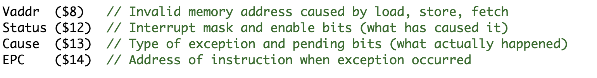
Exception handling
- Control transferred to an exception handler, in MIPS it is handled in CP0.
- Shouldn’t write too much code in exception handler as we want to get out of it asap.
- Best example of simple handling method is to skip the offending instruction.
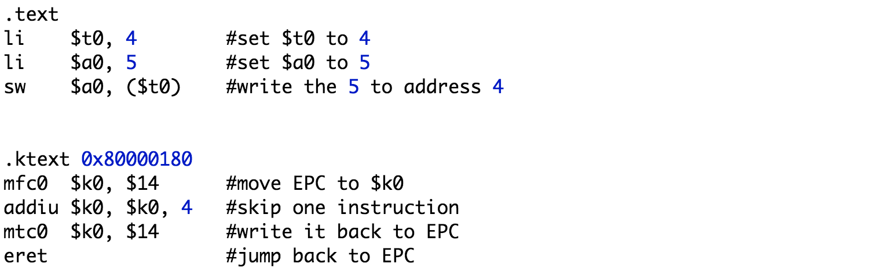
Interrupts vs Polling
- Interrupt: When device has an input e.g. keyboard is pressed, an interrupt is sent to CP0 and then dealt with (may need some sort of input hierarchy).
- Polling: Microcontroller checks whether there is an input available throughout all devices (can waste a lot of time clock ticks if there are no available inputs).
ASS: Scheduler
Process scheduling
- Process: Code defining behaviour (instructions), make instance and use registers to execute program. State of system is what runs the machine.
- Periodic timer: Interrupt running processes. Save the state, deal with the interrupt and then return to restored process.
- Allows us to prioritise tasks e.g. make certain tasks run more often than others.
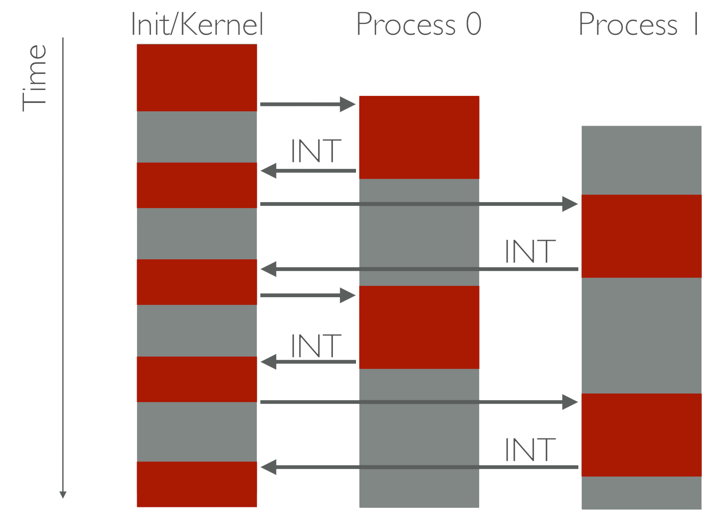
Visualisation
- Red shows tasks that the processor carries out that are seen as useful, the grey areas are non-useful tasks.
- This shows that processor can waste time processing non-useful tasks, can speed up with software by speeding up switching between interrupts.
Virtual memory
- Virtual memory space mapped onto real memory where a process is not aware of details of physical memory (only sees a chunk of memory starting at address 0).
- The OS, with the help of memory management unit (MMU) manages mapping of VM.
BUG: Assembling programs
Executable creation
- Preprocessing: Statements e.g. C code
- Compilation: Transform C into assembler source code, depends on machine architecture.
- Assembly: Creates machine code stored in object file i.e. binary code.
- Linking: Combines several object files together, this is done by doing ‘gcc hello.o’
Static linking
- Program and library that it’s linked against are combined together by linker, usually have the extension .a
- Binding between program and library is fixed i.e. need to link again to change library.
- Advantage: You know which libraries are used when compiling and everything is present when you copy over programs.
- Disadvantage: Programs take a lot of disk space given that libraries are often big.
Dynamic linking
- Program and library that it references are not combined together by linker, usually have the extension .so
- Linker places information into executable that tells loader which object module code is in and which runtime linker should be used to bind references.
- Advantage: Enables small file sizes on disk, libraries can be updated without re-assembly and more than one program can share the same library.
- Disadvantage: Libraries may change, may not always understand impact on program.
Process loading
- In a Linux environment, a process is loaded from a file in ELF format.
- OS loader loads data into main memory which performs memory and access validation and process setup.
- Allocate memory.
- Copy address space from secondary to main memory.
- Copy program arguments to stack.
- Initialise registers e.g. the stack pointer.
- Jump to start routine i.e. jump to main().
BUG: Linux
Boot Process |
Stage 1: BIOS | Program counter of CPU initialised by power-on event to BIOS. Performs basic initialisation of hardware. Initial code includes the boot loader code, kernel code of stepping stone OS, kernel code of target OS. |
Stage 2: Bootloader | Load system kernel image and initial ram disk, temp root file system (initrd) to memory and hands control over to them (fetching the OS). |
Stage 3: Debian | Run system kernel with root filesystem in memory. Executes ‘init’ script. |
Stage 4: Debian | Root filesystem is switched from memory to the one on the disk. Init program is executed to perform main boot process of starting programs. |
Miscellaneous
- SysV-style init: Standard process for controlling which program ‘init’ script launches or halt when initialising a runlevel → located in the /etc/rc.d/ directory.
- Login: Logins from terminals and console are provided by ‘getty’ program, reads username and runs login program that reads password.
- Authentication: Provided by PAM (Pluggable Authentication Modules), uses 3 config files → ‘etc/passwd’ user account info, ‘etc/shadow’ secure user account info, ‘etc/group’ group information.
- Filesystem: Files organised in directories in a tree rooted at ‘/’
- Shell: Any program that users use to type commands e.g. bash, tcsh, dash, csh.
- X Window System: UNIX and Linux don't incorporate user interface into the kernel.
BUG: Function Pointers
Overview
- Variables that point to an address of a function rather than the variable itself.
- Compiler replaces reference to function by appropriate addresses.
- However, what happens if you don’t know which function to call at runtime?
Use example
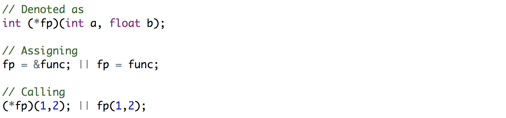
Callback functions
- Function that is called through function pointer where the address of function is passed as argument to another function.
e.g. Timer functions have to call function when timer expires, yet timer logic doesn’t know your application.
- The other function can be used as a parameter in a function.
BUG: C Preprocessor
Overview
- Macro processor that is used automatically by C compiler to transform program before compilation. Defines macros which are shortcuts for longer constructs.
Initial processing | Input file is read into memory and broken into lines, different systems used to indicate end of line. Continued lines are merged, all comments replaced with single spaces. |
Tokenization | File converted into preprocessing tokens, identifier is any sequence, number includes all integer/floats, string literals are string/characters. |
Preprocessing language | Consists of directives to be executed and macros to be expanded e.g. you can in/exclude parts of program according to conditions. |
Header files | Included in preprocessing using #include, use <file> to search for file, and “file” to search for your own file. |
Object-like macros | Created using #define directive, e.g. #define BUFFER_SIZE 1024 is an abbreviation for token 1024. Written in uppercase by convention. |
Function-like macros | Created using #define directive and foobar(), e.g. #define lang_init(). They can take arguments just like functions. |
Stringification | Convert macro argument into string constant, parameters not replaced inside string constants but you can use ‘#’ instead. |
Predefined macros | You can use these without definitions e.g. _FILE_ expands to name of current file in form of string constant, _LINE_ expands to current input line number. |
Undefining and redefining macros | Created using #undef directive, takes single argument, the name of macro to undefine. Has no effect if the name is not a macro. |
BUG: Bit Operations
BUG: Structs and Unions
Overview
- Structure contains ordered group of data objects, can have varied data types, each data object is called a member.
- In a union, data objects start at same location in memory, can only represent value of only one of its members at a time.
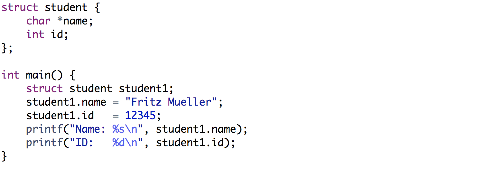